LRF Akademi
Uygulamalı düğüm atölyesi, atış laboratuvarı, çekiş aksiyonları ve gerçek mera senaryolarıyla sahadaki ustalığını bir üst seviyeye taşı.
Kritik LRF Düğümleri
Takımın en zayıf halkası her zaman düğümdür. İnce PE iplerde çeker kaybını sıfıra indiren, mikro halkalardan takılmadan akan 5 temel LRF düğümünü video eşliğinde adım adım uygula.
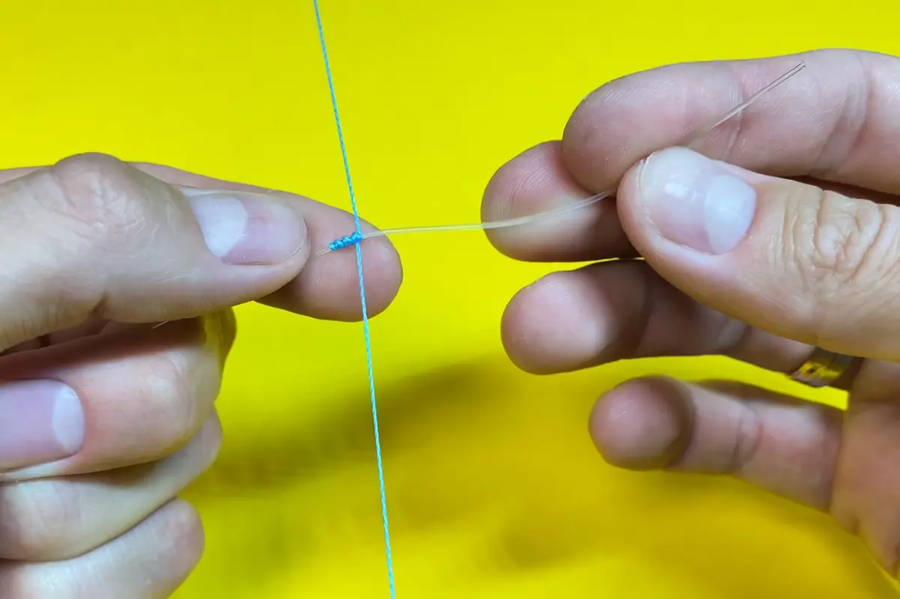
FG Knot (PE İp - Lider Birleştirme)
LRF'nin altın standardı olan FG Knot, florokarbon lideri bükmeden PE örgü ipi için parmak tuzağı mantığıyla liderin üzerine sarar. Kamışın mikro kılavuz halkalarından sürtünmesiz geçer ve %95'e varan düğüm direnci sunar.
- PE ana ipi parmaklarınla veya kamış esnekliğinden destek alarak tamamen gergin tut.
- 0.14-0.20 mm florokarbon lideri gergin PE ipin bir altından bir üstünden geçirerek 18-22 çapraz sarım ör.
- Örgüyü sabitlemek için PE ipin serbest ucuyla hem ana ip hem lider üzerinden 2 ters yönlü yarım kazık (half-hitch) at.
- Düğümü iyice ıslat; ana ip ve lideri iki yandan gererek PE sargılarının florokarbona gömülmesini sağla.
- Lider fazlalığını 1-2 mm payla kes, ana PE ip üzerine 4 yarım kazık (veya Rizzuto bitişi) atarak düğümü kilitle.
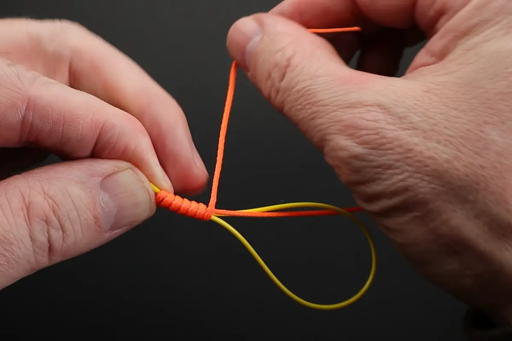
Albright Düğümü (Hızlı Saha Lideri)
Rüzgarın sert estiği, karanlıkta veya balık sürüsünün tam önünden geçtiği anlarda FG Knot ile vakit kaybetmemek için en pratik çözümdür. Kalın lideri bir tel toka gibi büküp ince PE ipi üzerine tek yönde sararak 30 saniyede sağlam bağlantı kurarsın.
- Florokarbon liderin ucunu 8-10 cm geriye katlayarak tıpkı bir firkete (U harfi) şekline getir ve başparmağınla sıkıca tut.
- PE örgü ipin ucunu bu U halkasının içinden geçir; ardından hem kendi uzantısını hem liderin iki bacağını birlikte saracak şekilde geriye doğru 10-12 tur düzenli, yan yana sar.
- Sargılar bitince PE ipin serbest ucunu, başlangıçta U halkasına girdiğin tarafla birebir aynı yönden halkadan dışarı çıkar.
- Düğümü iyice ıslat, sargıları parmaklarınla U halkasının ucuna doğru nazikçe toplayarak iki yandan çekip oturt ve fazlalıkları sıfıra yakın kes.
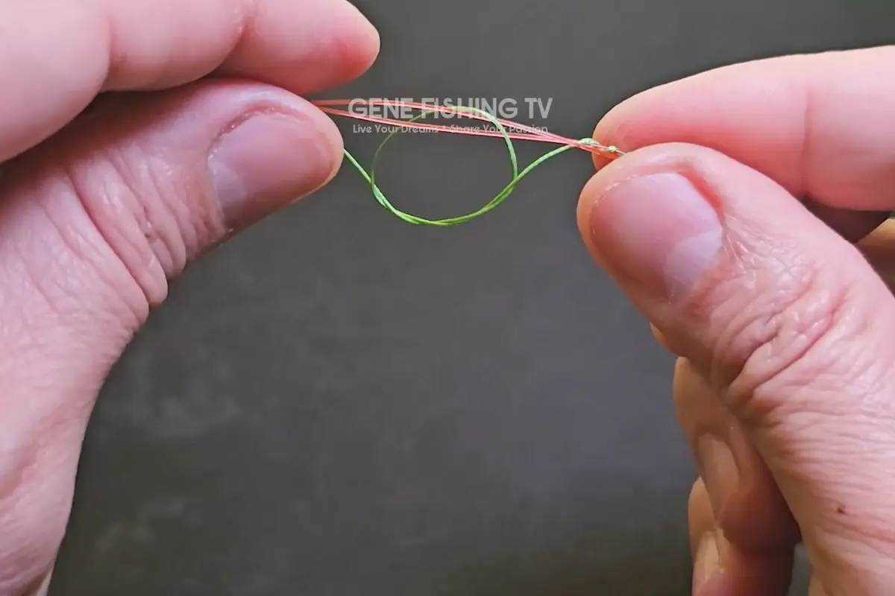
Mahin Düğümü (Konik & Kaymaz Lider)
Albright'ın güçlendirilmiş ve inceltilmiş halidir. Lider ucuna atılan basit durdurma düğümü (overhand stopper knot) ve ileri-geri çift kat sargı tekniği sayesinde hem ipin kaymasını imkansız kılar hem de kalem ucu gibi daralan konik (conical) yapısıyla kamışın mikro halkalarından takılmadan akar.
- Florokarbon liderin ucuna basit bir durdurma düğümü (overhand stopper knot — tek halkalı adi düğüm) at ama sıkmadan gevşek bir çember olarak bırak.
- PE örgü ipin ucunu bu gevşek halkanın içinden geçirip lider gövdesi boyunca ileriye doğru 8-10 tur sıkı ve düzgün şekilde sar.
- En uç noktadan geri dönerek PE ipi az önce attığın sargıların tam üzerinden ters yönde 6-8 tur daha sar (ileri-geri çift kat sargı); bu çift katman düğüme konik form ve kaymaz kilit verir.
- PE ipin ucunu, ilk girdiğin yönün tam aynısından liderdeki durdurma düğümünün içinden çıkar, düğümü ıslat ve önce lider düğümünü ardından iki ucu çekerek konik biçimde sıkıştır.
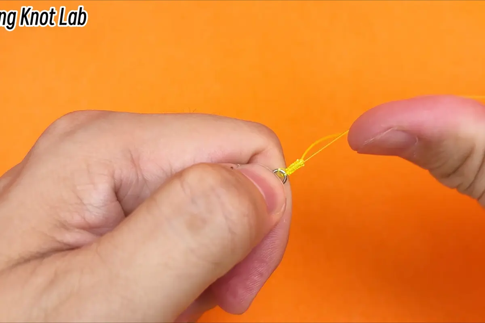
Improved Clinch Düğümü (Mikro Klips Bağlantısı)
Florokarbon liderin ucunu #000-#00 mikro klipse veya doğrudan jig head halkasına bağlarken hız, kompakt form ve yüksek çeker güvenilirliği sunar. Merada rüzgar altında bile saniyeler içinde temizce bağlanır.
- Florokarbon liderin ucunu #000-#00 mikro klipsin üst halkasından geçir ve yaklaşık 12-15 cm serbest pay bırak.
- Serbest ucu ana liderin etrafında birbirine binmeden düzenli biçimde 6-7 tur çevir (ince 0.14 mm liderde 7 tur daha güvenlidir).
- Ucu önce klips halkasının hemen üstündeki ilk küçük boşluktan, ardından kendi oluşturduğu büyük üst ilmekten geçir.
- Sürtünme ısısını önlemek için düğümü iyice ıslat, sargıları parmağınla klipse doğru iterek yavaşça sık ve 2 mm pay bırakarak kes.
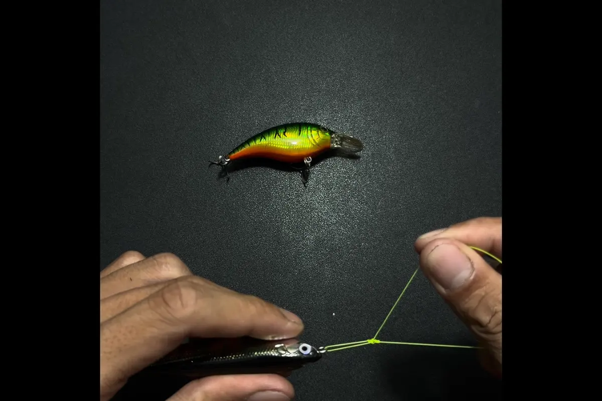
Rapala (Halka) Düğümü
Klipssiz avlarda ve 3-6 cm mikro maket balıkların yüzüş dengesini bozmamak için geliştirilmiş serbest halka düğümüdür. Sahte burnunda küçük bir menteşe halkası bırakarak su içindeki doğal yalpalamayı maksimuma çıkarır.
- Liderin ucundan yaklaşık 15 cm geride basit bir adi düğüm (overhand knot) yap ama sıkma; gevşek bırak.
- Serbest ucu maket balığın burnundaki halkadan geçir, ardından gevşek bıraktığın adi düğümün içinden geri geçir.
- Serbest ucu ana liderin etrafında 4-5 tur düzenli şekilde sararak düğüm gövdesini oluştur.
- Ucu tekrar adi düğümden ve oluşan son üst ilmekten geçir, ıslat ve maket burnunda 4-6 mm serbest halka kalacak şekilde oturt.
Atış Teknikleri Laboratuvarı
1-2 gramlık mikro yemleri rüzgarda dolaştırmadan uzağa göndermek ve iskele altlarına nokta atışı indirmek, kol gücüyle değil kamış yüklemesi ve parmak kontrolüyle mümkündür.
-
01 • 0.8-2 gr Sessiz Nokta Atışı
Sarkaç (Pendulum) Atış
İskele ayakları, tekne araları ve dar kayalık ceplerde kamışı geriye savuracak yer olmadığında kullanılır. Yemin kendi salınım ivmesinden yararlanarak silikon yemi suya fısıltı sessizliğinde indirirsin.
- Sarkıtma Payı: Jig head'i kamış ucundan 25-35 cm aşağıda bırak, işaret parmağınla ipi sabitleyip makine telini aç.
- Geri Salınım İvmesi: Kamış ucunu hafifçe geriye çekerek silikon yemin sana doğru sarkaç gibi sallanmasını başlat.
- Yumuşak İleri İtiş: Yem ileriye doğru dönmeye başladığı tam o anda bilek hareketiyle kamış ucunu hedefe yöneltip parmağını kaldır.
- Sessiz Su Girişi: Yem havada yükselmeden alçak bir yay çizerek suya sessizce düşer; sığdaki ürkek balıklar kaçmaz.
Saha Tüyosu: İskele altları, tekne gölgeleri ve 0.8-2 gr ultra hafif silikon sunumlarında sıçrama sesini sıfıra indirir. -
02 • 1-3 gr Alçak Yörünge
Yandan (Sidearm) Atış
Üstünde iskele tavanı, ağaç dalı veya halat bulunan dar kıyı şeritlerinde klasik Tepeden (Overhead) Atış takılma riski taşır. Yatay düzlemdeki Yandan (Sidearm) Atış ile yemi suyun hemen üzerinden hedef gölgeye gönderirsin.
- Yatay Pozisyon: Kamışı vücudunun yan tarafında su yüzeyine paralel konuma al; sahte kamış ucundan 25-30 cm sarkık dursun.
- Yandan Yükleme: Kamışı geriye doğru yumuşakça esneterek ucun ağırlıkla yüklenmesini sağla (kolu değil bileği ve ön kolu kullan).
- Alçak Savurma: Yatay eksende keskin bir bilek ivmesiyle öne savur; sahte su yüzeyinin 40-50 cm üzerinden alçak uçuşla ilerler.
- Hassas Bırakış: İşaret parmağını hedef noktanın hemen öncesinde kaldırarak yemin yukarı dikleşmesini engelle ve makine telini elle kapat.
Saha Tüyosu: Rüzgarlı havalarda ve berrak sularda siluetini gizleyerek 1-3 gr silikon ve sığ dalar maket balık sunmak için idealdir. -
03 • 3-7 gr Maksimum Erim
Tepeden (Overhead) Mesafe Atışı
Açık sahillerde, mendirek uçlarında ve uzak su üstü oynaklarında 3-7 gr mikro metal jig ile sert maket balıkları maksimum erime ulaştırmanın temel tekniğidir. Güç değil, kamış gövdesinin doğru yüklenmesi mesafe kazandırır.
- İdeal Sarkıtma & Duruş: Sahteyi kamış ucundan 30-40 cm aşağıda bırak, makine telini aç, ayaklarını hedefe 45° açıyla sağlam bas.
- Gövdeyi Yükleme: Kamışı geriye al (saat 11-12 hattı); sahtenin ağırlığıyla kamışın orta gövdesinin geriye esnediği anı hisset.
- Keskin Savurma & Çıkış Açısı: Üst elinle öne iterken alt elinle dipçikten kendine çekerek kamışı hızlandır; saat 10 yönünde (35°-40° çıkış açısı) parmağını bırak.
- Halka Hizalaması: Atış bittiğinde kamış ucunu ipin çıkış doğrultusunda sabit tut ki PE ip mikro halkalara sürtünmeden aksın.
Saha Tüyosu: 3-7 gr mikro metal jig, micro spoon ve 4-7 cm maket balıklarla açık sahillerde uzak sürüleri taramak için altın standarttır. -
04 • PE #0.2-#0.4 İp Kontrolü
Rüzgara Karşı Düşük Açılı Atış ve İp Kontrolü (Feathering)
İnce PE örgü ipler yan veya karşı rüzgarda havada büyük bir yay (balon) oluşturur. Bu boşluk hem ilk vuruşları kaçırmana hem de makarada kuşgözü (wind knot) oluşmasına yol açar. Çözüm: alçak çıkış açısı ve parmak kontrolü.
- Alçak Çıkış Açısı: Atışı 45° yerine 20°-25° eğimle suya paralel savur; yem rüzgarın sert estiği üst hava katmanına hiç çıkmadan erim kazanır.
- Parmak Kontrolü (Feathering): Yem suya değmeden 1 saniye önce işaret parmağının ucunu makaranın ön dudağına hafifçe yaklaştırıp ip çıkışını yavaşlat.
- Anında Gergin Hat: Feathering sayesinde ip havada düzelir, lider öne uzanır ve yem suya değdiği an makine telini elle kapatarak ilk düşüş (fall) vuruşunu yakalarsın.
- Kamış Ucu Seviyesi: Sarım boyunca kamış ucunu su yüzeyinden 10-15 cm yukarıda tutarak rüzgarın ipe temas eden yüzey alanını kes.
Saha Tüyosu: Karşı ve yan rüzgarlı açık kıyılarda 2-8 gr mikro metal jig ve ağır jig head atışlarında kuşgözünü önler.
Çekiş ve Aksiyon Teknikleri
Su altındaki silikon veya maket balık yalnızca senin bilek ritminle canlanır. Yüzeyden tam dibe kadar her su katmanına özel 12 bağımsız çekiş tekniğini adım adım öğrenerek balığın o günkü iştahına tam karşılık ver.
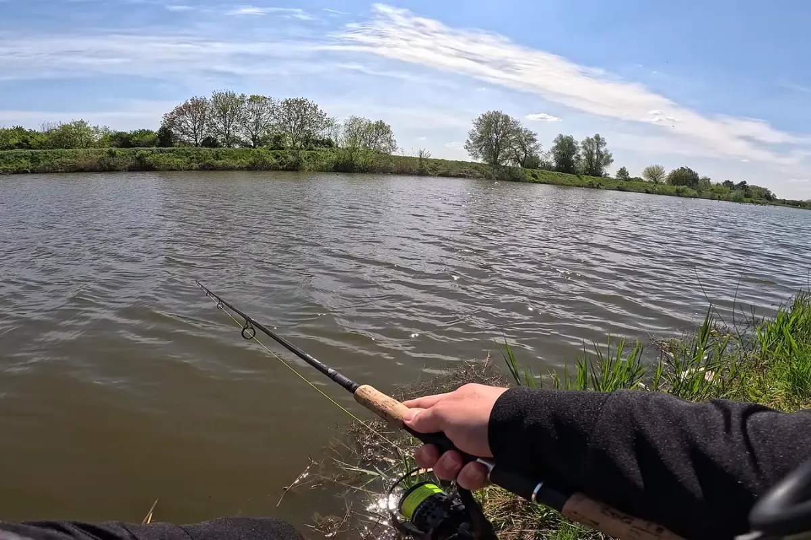
Düz Sarım (Steady Retrieve)
LRF'ye yeni başlayanların ilk ustalaşması gereken en temel çekiş tekniğidir. Suyun altında yemin, hiçbir şeyden habersiz sakin sakin yüzen küçük bir yem balığı gibi dümdüz ilerler; makine kolunu hiç hızlanıp yavaşlamadan bisiklet pedalı çevirir gibi sabit tempoda çevirmen yeterlidir.
- Atıştan sonra makine telini elinle kapat ve sahtenin istediğin derinliğe inmesi için birkaç saniye bekle.
- Kamışı hiç sallamadan sabit tut; makine kolunu saniyede yaklaşık 1 tam tur olacak şekilde kesintisiz ve akıcı tempoda çevir.
- Yemin hangi derinlikten geleceğini kamış ucunla ayarla: sığ su için ucu gökyüzüne (saat 11) kaldır, derin su için suya yaklaştır (saat 8).
- Kürek kuyruklu (paddle tail) silikonlarda veya küçük dalarlı (micro crankbait) maketlerde kendi kuyruk titreşimi devreye girer; vuruş gelince sadece kamışı hafifçe kaldır.
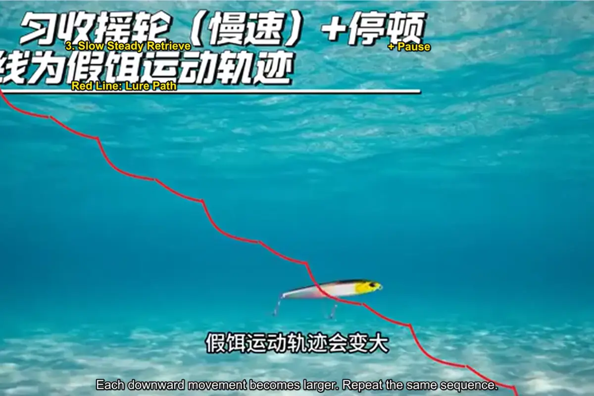
Dur-Kalk (Stop & Go)
Düz sarımı kısa molalarla bölerek yeme "kaçmaya çalışıp gücü tükenen yaralı balık" rolü verirsin. Suyun altında yem önce birkaç adım ileri yüzer, sonra aniden durup yavaşça dibe doğru süzülür; arkadan izleyen istavrit ve levrek tam bu mola saniyesinde dayanamayıp saldırır.
- Yem hedef derinliğe indikten sonra makine kolunu normal hızda 4-5 tur çevir ("Kalk / Go" aşaması).
- Trafikte kırmızı ışığa yakalanmış gibi elini aniden 1-2 saniye tamamen durdur ("Dur / Stop" aşaması); kamışı oynatma ki yem gergin ip altında kavis çizerek süzülsün (tension fall).
- Bu 1-2 saniyelik molada kamış ucunda küçük bir "tık" dokunuşu veya ipin erkenden gevşediğini görürsen bilekten nazikçe yukarı kaldırıp tasmala.
- Vuruş gelmezse yeniden 4-5 tur sarıma geç ve kıyıya kadar aynı "sar - dur - sar - dur" merdiven ritmini tekrarla.
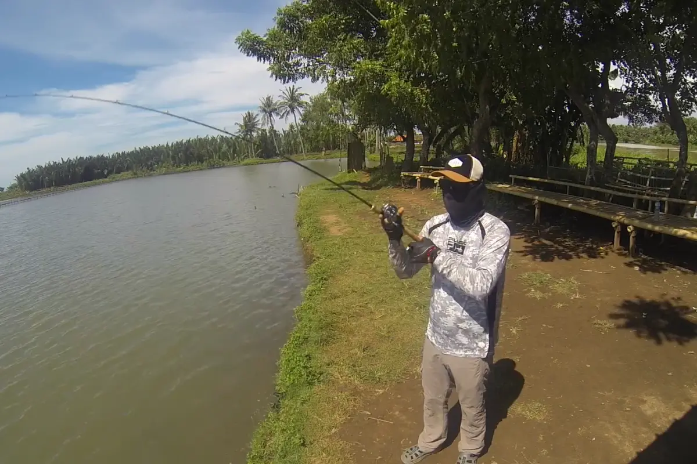
Kaldır ve Bırak (Lift & Fall)
Yemi makineyle değil, doğrudan kamışı yukarı kaldırıp indirerek yüzdürme tekniğidir. Suyun altında silikon yem tıpkı su yüzeyinden dibe doğru süzülen bir karides veya yorgun bir kurt gibi testere dişi şeklinde yükselir ve yavaşça aşağı düşer.
- Jig head'i hedef derinliğe veya dibe indir; kamış ucu suya doğru (saat 9 hizasında) ve ip hafifçe gergin dursun.
- Makine kolunu hiç çevirmeden kamış ucunu yumuşak ve akıcı bir hareketle saat 9'dan saat 11 yönüne kaldır ("Kaldır / Lift"); bu sırada yem su içinde yukarı doğru süzülerek havalanır.
- Kamışı saat 11'de 2-3 saniye sabit tut veya yavaşça indirirken sadece oluşan ip boşluğunu makineyle topla ("Bırak / Fall"); yem bu anda tüy gibi süzülerek dibe iner.
- Süzülüş sırasında ipin yanlara kaydığını ya da kamış ucunda ince bir "tık" hissettiğini fark ettiğin saniye bilekten tasmala.
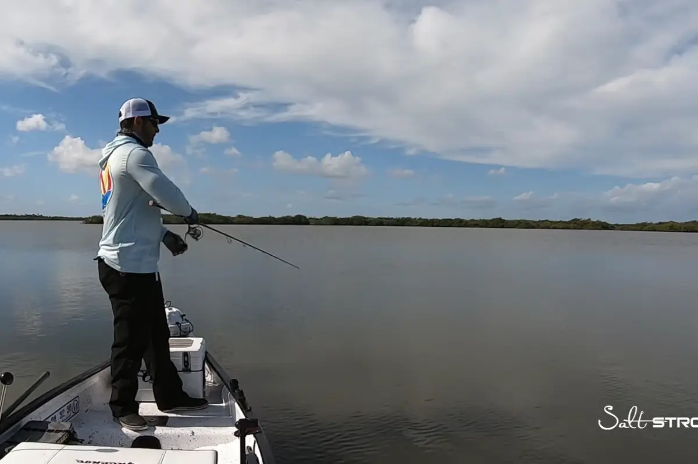
Kamış Ucu Vuruşu (Twitching)
3-7 cm'lik sert maket balıklara (micro minnow) ani bilek dokunuşlarıyla "yaralanmış, dengesi bozulup yan yatan balık" hareketi verme tekniğidir. Suyun altında maket balık her vuruşta gövdesini yana çevirip gümüş gibi parlar ve avcı balığın saldırı refleksini anında ateşler.
- Atış sonrası makine telini kapat ve kamış ucunu saat 7-8 yönünde su yüzeyine yakın tut; ipte çok az bir boşluk (slack) bırak.
- Kolunu hiç savurmadan, tıpkı bir orkestra şefinin bagetini kısa kısa sallaması gibi sadece bileğinden ardışık 2-3 kısa "tık-tık" vuruşu yap.
- Her bilek vuruşundan hemen sonra makine kolunu yarım tur çevirerek ipte oluşan fazlalığı topla ki maket bir sonraki hamleye hazır olsun.
- 2-3 vuruşun ardından 1-2 saniye dur; askıda kalan (suspending) veya yavaş batan (sinking) maket yan yatıp parladığı an levrek ve baraküda saldırır.
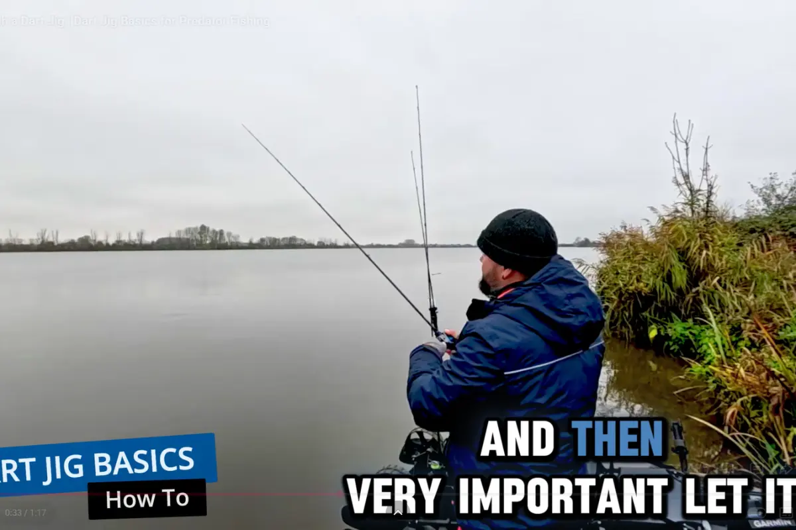
Ok Gibi Fırlatma (Darting)
Üçgen burunlu ok başlı jig head (Dart Head) ve düz kuyruklu silikonla yapılan hızlı, keskin sağ-sol sıçrama tekniğidir. Suyun altında yem, avcı görünce panikle sağa sola ok gibi fırlayan bir karides veya yavru balık gibi keskin "Z" harfleri çizer; gündüz berrak suda balığa düşünme fırsatı bırakmaz.
- Üçgen kesimli 1.5-3 gr Dart Head jig head'e düz ve ince bir silikonu tam ortalayarak yamuk kalmayacak şekilde tak.
- Kamışı hafif yukarı eğik (saat 9-10 arası) tut; kapı tokmağına seri ve ritmik vurur gibi bileğinle yukarı doğru "tık-tık-tık" şeklinde 3-4 seri darbe yap.
- Her bilek darbesiyle aynı anda makine kolunu çeyrek tur çevir; üçgen kafa suyu yararak bir sağa bir sola ok gibi fırlar.
- 3-4 keskin sıçramadan sonra 1 saniye durup yemin süzülmesine izin ver; meraktan peşine düşen karagöz, hanos ve istavrit tam bu duruşta yemi kapar.
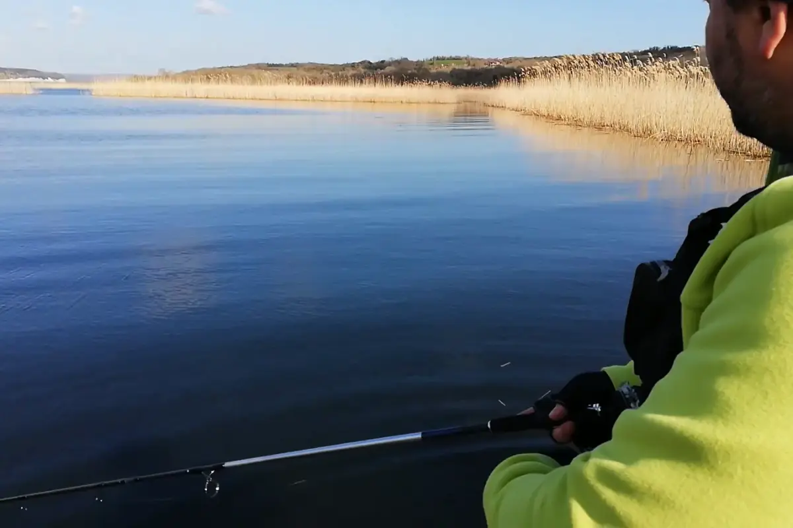
Su Üstü Zikzak (WTD - Walk the Dog)
4-7 cm gagası olmayan su üstü kalem sahteleri (mikro pencil) suyun tam yüzeyinde kesintisiz sağa-sola kaydırarak "S" çizdirme tekniğidir. Suyun üstünde tıpkı kaçacak yeri kalmamış bir yavru balık gibi iz bırakır ve sabah suyu ile gün batımında gözünün önünde patlayan saldırılar almanı sağlar.
- Mikro pencil suya indiğinde makine telini elle kapat ve kamış ucunu suya dönük (saat 7-8 açısı) aşağı eğik konumda tut.
- Sanki elindeki kalemle masaya "tik-tak-tik-tak" diye ritim tutar gibi bileğini aşağı doğru kısa kısa vur; her vuruşun hemen ardından ucu milimetrik ileri verip ipi anlık gevşet ki sahte rahatça yan dönebilsin.
- Bileğin ritim tutarken diğer elinle makine kolunu yavaş ve sabit biçimde (her vuruşta çeyrek tur) çevir; çok hızlı sararsan sahte zikzak çizmeden dümdüz kayar.
- Ritim oturduğunda maketin burnu yüzeyde düzenli "S" izi çizer; arada 1-2 saniye tamamen durup arkasından su kabartarak gelen levreğin saldırmasına fırsat ver.
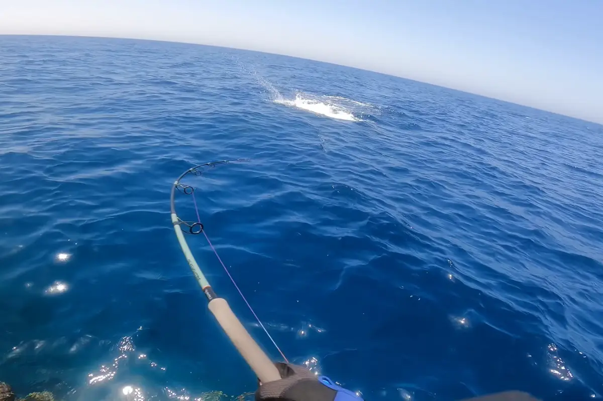
Su Üstü Patlatma (Popping & Pop-Stop)
Ağzı kaşık gibi çukur olan su üstü sahtelerle (mikro popper) yüzeyde "pıt-pıt" diye su sıçratıp kabarcık tüneli çıkarma tekniğidir. Suyun üstünde tıpkı başka bir avcı balığın yüzeyde yem kovalarken çıkardığı sesi taklit eder; meraklı ve kıskanç levrek, çinekop ile melanuru uzaktan çağırır.
- Mikro popper suya düştüğünde hemen sarma; su halkaları dağılana kadar 2-3 saniye bekle (bazen balık tam bu ilk sessizlikte saldırır).
- Kamış ucunu suya yakın tut ve bileğini aşağı-geriye doğru kısa, tok bir hamleyle çek; sahtenin çukur ağzı suyu kepçeleyip öne su sıçratır ve "pop" sesi çıkarır.
- Çekişten hemen sonra makineyle sadece boş ipi topla ve sahteyi 2-4 saniye yüzeyde hareketsiz bırak ("Pop-Stop" yani patlat-bekle ritmi).
- Hafif çırpıntılı sularda ardışık 2-3 patlatma yapıp duraklayarak ses seviyesini artır; durgun ve cam gibi sularda ise daha nazik, küçük sıçratmalar uygula.
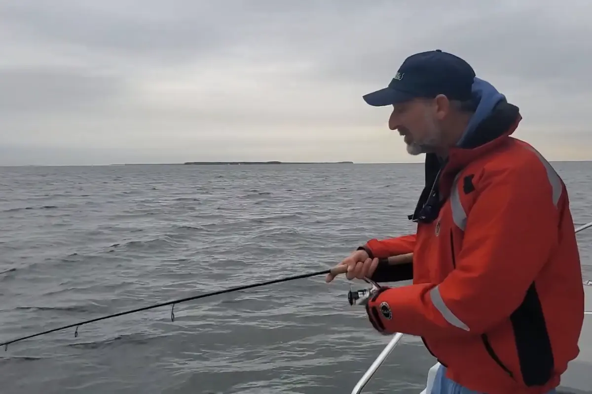
Katman Tarama (Count-Down)
Denizi tıpkı çok katlı bir apartman gibi düşün: balık o akşam 1. katta (yüzeyde), 3. katta (orta suda) veya bodrumda (dipte) olabilir. Katman Tarama (Count-Down), yem suya düştükten sonra içinden saniye sayarak her atışta farklı bir katı tarayıp sürünün saklandığı derinliği şansa bırakmadan bulma yöntemidir.
- İlk atışta yem suya değer değmez makine telini kapat, içinden "1001, 1002, 1003" (3 saniye) say ve sarıma başla; böylece en üst sığ katmanı tararsın.
- Vuruş gelmezse ikinci atışta 6 saniye, üçüncü atışta 9 saniye sayarak her seferinde bir alt kata in (1.5 gr jig head saniyede ortalama 30-40 cm batar).
- İpin bir anda tamamen gevşediği saniye yemin tabana ulaştığını gösterir; bu sayıyı aklında tutarak meranın toplam derinliğini öğrenmiş olursun.
- Örneğin 5. saniyede ilk istavrit vuruşunu aldığında, sonraki her atışta doğrudan 5 saniye sayıp yemi tam sürünün göz hizasına indir.
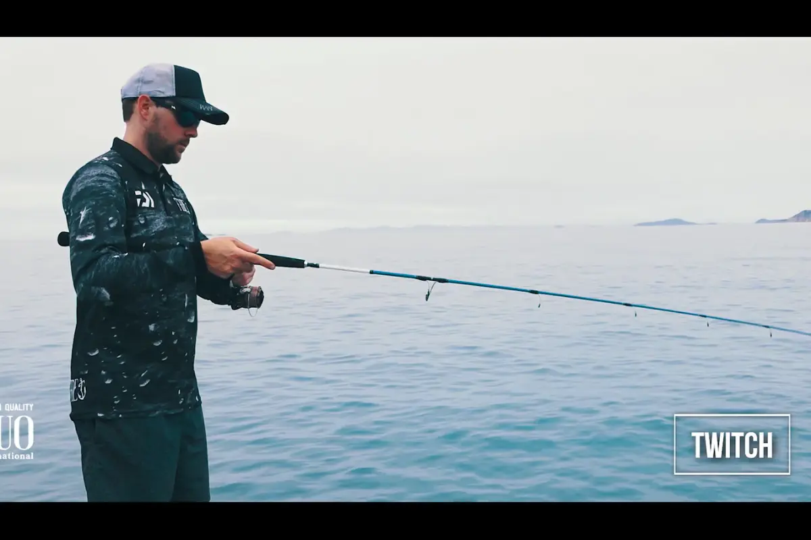
Metal Jig Süzülüşü (Micro Jigging)
2-8 gramlık parlak metal jiglere yukarı doğru seri hamleler yaptırıp ardından serbestçe düşmeye bırakma tekniğidir. Suyun altında metal jig, önce yukarı fırlar, sonra ağaçtan kopup sağa sola dönerek yere inen bir yaprak gibi parlayarak süzülür (flutter fall); uzak mesafedeki istavrit, çinekop ve palamut bu parıltıya koşa koşa gelir.
- Metal jigi uzağa fırlatıp hedef derinliğe veya dibe indir (5 gr metal jig saniyede yaklaşık 70-90 cm hızla batar).
- Kamış ucunu aşağıdan yukarı doğru ardışık 2-3 seri bilek hamlesiyle kaldır (pitch / jerk); her yukarı kaldırışta makine kolunu yarım tur çevirerek jigi zıplat.
- Hamlelerin ardından sarımı kesip kamış ucunu kontrollüce indir; metal jig 2-3 saniye boyunca yan dönüp güneş veya ay ışığını yansıtarak yaprak gibi süzülür.
- Süzülüş sırasında su üstündeki ipin akışı beklenenden önce durur veya yana kayarsa balık jigi düşerken kapmıştır; hiç beklemeden kamışı kaldırıp sarıma geç.
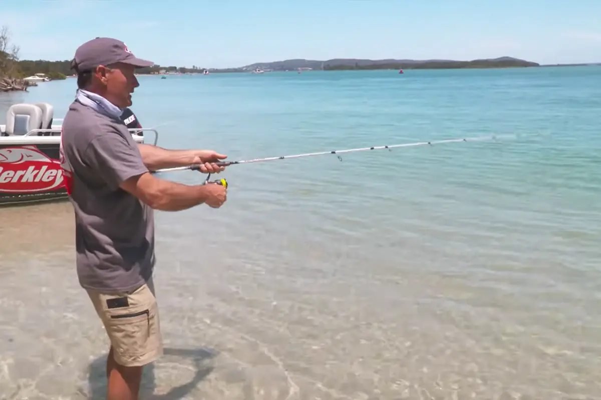
Dip Zıplatma (Bottom Bouncing)
Jig head'i deniz tabanına hafifçe vurup kaldırarak dipte küçük kum bulutları ve taş tıkırtısı çıkarma tekniğidir. Suyun altında yem, tıpkı kumun içinden kurtçuk veya küçük yengeç eşeleyen bir canlı gibi tabanda sekerek ilerler; mırmır, barbun, iskorpit ve kaya balığının dikkatini anında üzerine çeker.
- Atıştan sonra makine telini açık veya kontrollü tutarak yemin tamamen dibe oturmasını bekle; ipin birden gevşemesi tabana değdiğinin işaretidir.
- Boş ipi aldıktan sonra kamış ucunu saat 10'dan saat 11'e doğru nazikçe kaldırıp yemi dipten 15-20 cm zıplat (tıpkı küçük bir basketbol topunu sektirir gibi).
- Kamışı tekrar saat 10'a indirirken makineyi sadece 1 tur sar ve jig head'in yeniden kuma veya taşa "tık" diye oturmasını hisset.
- Kumlu diplerde zıplatmalar arasına 30-40 cm'lik yavaş sürükleme ekleyerek küçük bir kum bulutu kaldır; tabandaki avcılar bu izi takip ederek yeme basar.
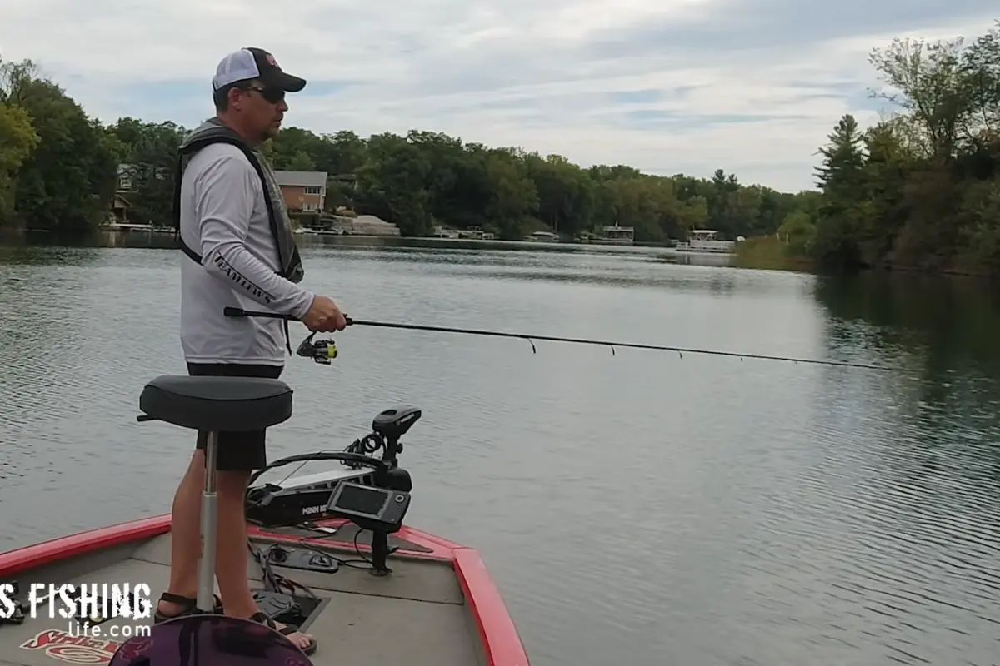
Ölü Balık Bekleyişi (Deadstick)
Bazen hiçbir şey yapmamak en etkili aksiyondur. Ölü Balık Bekleyişi (Deadstick), kokulu veya yüzer (floating) silikon yemi dibe bırakıp makineyi ve kamışı tamamen hareketsiz tutma tekniğidir; suyun altındaki doğal akıntı silikonun kuyruğunu kendiliğinden dalgalandırırken en ürkek eşkina, mırmır ve karagöz bile şüphelenmeden yeme yaklaşır.
- Özellikle kokulu (karides/kurt aromalı) ve kuyruğu yukarı dikilen yüzer (floating) bir silikonu 1-2 gr jig head ile dibe indir.
- Önce 1-2 küçük zıplatmayla bölgedeki balıklara "buradayım" sinyalini ver, ardından hem kamışı hem makineyi 5 ila 15 saniye boyunca tamamen sabit bırak.
- İpi ne tel gibi gergin ne de suya yatacak kadar bol bırak; hafif yay şeklinde (yarı gergin) tut ki balık yemi ağzına aldığında direnç hissedip tükürmesin.
- İlk küçük tırtıklamada aceleyle çekme; 1 saniye bekle ve kamış ucunda ağır, kararlı bir eğilme hissettiğinde yumuşakça tasma at.
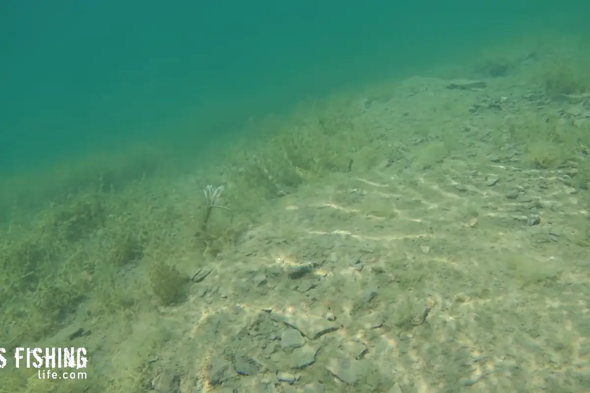
Yerinde Titretme (Shaking)
Silikon yemi neredeyse hiç ileri çekmeden, olduğu noktada titreterek canlandırma tekniğidir. Suyun altında yem, tıpkı kayanın dibinde can çekişen bir kurtçuk veya bacaklarını oynatan küçük bir karides gibi yerinde kıpırdar; özellikle iskele ayakları, taş kovukları ve dar beslenme ceplerinde saklanan balıkları dışarı çıkarır.
- Yemi iskele ayağının, kaya yarığının veya dip sınırının hemen yanına indir ve ipin boşluğunu nazikçe al.
- İşaret parmağını kamış gövdesinin üstüne koy; tıpkı bir tuzluğu çok hafifçe sallar veya üşümüş gibi elini titretir gibi yalnızca kamış ucunu 2-3 cm'lik minik hareketlerle titreştir.
- Bu sırada makine kolunu ya hiç çevirme ya da çok ağır çekimde (saniyede çeyrek tur) sararak yemin balığın görüş alanında mümkün olduğunca uzun kalmasını sağla.
- 3-4 saniye titretip 2 saniye tamamen dur; yemin hareketi kesildiği an kovuktan çıkan iskorpit, kaya balığı, karagöz veya eşkina silikonu vakumlar.
Uygulamalı Mera Senaryoları
Düğüm, atış ve çekiş teknikleri tek başına değil, meranın o anki ışık, rüzgar ve dip yapısıyla birleştiğinde sonuç üretir. İşte sahada en sık karşılaşacağın 4 gerçek kıyı vakası ve tam reçetesi.
-
Senaryo 01 • Gündüz
Berrak Su ve Güneşli Gündüz Avı
Görüş mesafesinin çok yüksek olduğu berrak sularda balıklar yemi ve misinayı santim santim inceler. Şüphe uyandırmamak için maksimum gizlilik ve balığa düşünme süresi bırakmayan seri aksiyon şarttır.
- Düğüm & Lider: 1.5-2 metre uzunluğunda 0.14-0.16 mm ince florokarbon lider + FG Knot.
- Atış Stratejisi: Kıyı siluetini gizleyerek uzak mesafeli Yandan (Sidearm) atışlar yap.
- Çekiş & Aksiyon: 1.5-3 gr Dart Head ile hızlı, keskin Darting & Twitching (balığa inceleme fırsatı verme).
- Yem & Renk: Şeffaf, gümüş simli, watermelon veya doğal kahve tonlarında 4-5 cm ince silikonlar.
Hedef Türler: Çipura, karagöz, hanos, levrek ve taş arası kaya balıkları. -
Senaryo 02 • Dalgalı
Bulanık, Köpüklü ve Dalgalı Sahil
Dalga ve çalkantı kıyıdaki oksijeni artırır, avcı balıkları sığa çeker. Görüş azaldığı için balığın yan çizgi (titreşim) duyusuna ve yüksek kontrastlı renklere hitap etmen gerekir.
- Düğüm & Lider: Sürtünme direnci yüksek 0.18-0.22 mm florokarbon lider + rüzgarda hızlı Albright / Mahin.
- Atış Stratejisi: Rüzgara Karşı Düşük Açılı Atış + Feathering ile ip balonunu önle, kamış ucunu suya yakın tut.
- Çekiş & Aksiyon: Kuyruk titreşimi güçlü paddle tail silikon veya grub ile yavaş ve kararlı Düz Sarım (Steady Retrieve).
- Yem & Renk: Yüksek kontrastlı UV chartreuse, pembe, turuncu veya beyaz kokulu yemler (3-5 gr ağırlık).
Hedef Türler: Levrek, lüfer/çinekop, mırmır ve iri istavrit. -
Senaryo 03 • Gece
Işıklı İskele ve Liman İçi
Liman ve iskele lambaları planktonları, planktonlar yavru balıkları, onlar da avcıları çeker. Balıklar aydınlığın tam ortasında değil, ışığın karanlıkla buluştuğu "gölge sınırında" pusu kurar.
- Düğüm & Lider: 0.16 mm florokarbon lider + FG Knot ve klips bağlantısında Improved Clinch.
- Atış Stratejisi: Işık-gölge sınırının 2 metre gerisine Sarkaç / Yandan Atış yaparak yemi gölgeden aydınlığa çek.
- Çekiş & Aksiyon: Count-Down (Derinlik Sayma) ile 3-5-8 saniye katman taraması yap, Stop & Go ile vuruş al.
- Yem & Renk: UV fenerle kısa şarj edilmiş Glow (fosforlu) beyaz, pembe veya yüksek siluetli koyu mor silikonlar (1-2 gr).
Hedef Türler: İstavrit, eşkina, iskorpit, tral ve liman içi levrek. -
Senaryo 04 • Sığ & İlişkenli
Sığ Kayalık ve Eriştelik Meralar
1-2 metre derinlikteki eriştelik ve sivri kayalık meralar en verimli beslenme noktalarıdır ama klasik jig head burada her atışta takılır. Doğru montaj ve yüksek kamış açısıyla takılmadan avlanırsın.
- Düğüm & Lider: Kesilmeye dirençli 0.18-0.20 mm florokarbon lider + sığ dalar makette Rapala Halka Düğümü.
- Atış Stratejisi: Erişte adacıklarının kenar koridorlarına Sarkaç / Yandan Atış ile nokta inişi yap.
- Çekiş & Aksiyon: Kamış ucu yukarıda (saat 11 açısı) tutarak yüzey altı Stop & Go veya eriştelerin hemen üzerinden Twitching.
- Yem & Montaj: 0.8-1.5 gr hafif Stand-Up / Cheburashka + offset iğne (iğne ucu silikon içinde gizli) ya da 30-50 cm dalarlı floating minnow.
Hedef Türler: Levrek, sarpa, karagöz, lahoz ve sığ su kaya balıkları.
Alternatif Montaj Tüyosu: Drop Shot & Split Shot
Klasik jig head'in sürekli takıldığı ilişkenli kayalıklarda veya balıkların son derece seçici olduğu durgun sularda iki pratik alternatif montaj avı kurtarır: Drop Shot montajında 2-5 gr kurşun liderin en ucunda, silikon yem ise kurşunun 20-40 cm yukarısında Palomar düğümüyle dik konumda bağlanır; böylece kurşun dipte sabit kalırken silikon yemi tek noktada askıda titreterek pasif eşkina, mırmır ve karagözü kışkırtabilirsin. Split Shot (Kıstırma Kurşun) montajında ise ağırlıksız mikro iğnenin 15-25 cm önüne 0.5-1.5 gr kıstırma kurşun takılarak kokulu silikon yeme berrak ve sakin sularda ağırlıksız, ultra doğal bir süzülüş kazandırılır.
Akademi Soru-Cevap ve Topluluk Alanı
Takıldığın düğüm adımlarını, meranda yaşadığın rüzgar veya aksiyon sorunlarını aşağıdan sor; hem eğitmen notlarıyla hem de Türkiye'deki LRF topluluğuyla birlikte çözüm üretelim.
Sorunu Sor veya Mera Tecrübeni Paylaş
GitHub hesabınla güvenli şekilde giriş yaparak soru sorabilir, mevcut tartışmalara kendi mera tecrübelerinle yanıt verebilirsin.
Akademiyi Tamamladın, Şimdi Kıyıya İnme Vakti!
Pratik Bilgiler ile saha içi bakım ve güvenlik tüyolarını cebine koy, Uzmanlık Rehberi ile jig head ve renk seçiminde nokta atışı yap.